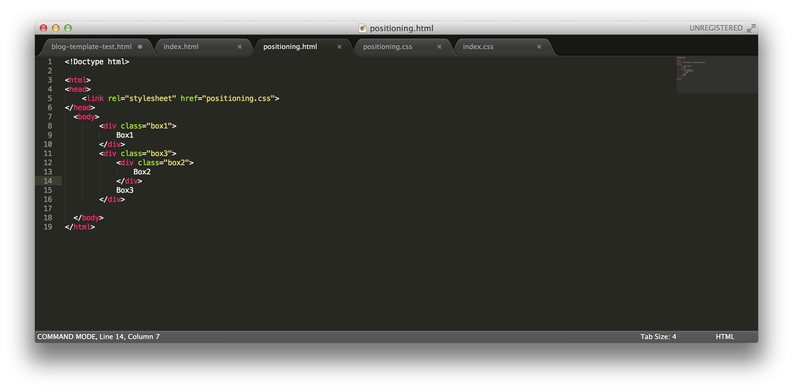

To discuss the difference between relative, absolute and fixed positioning in CSS, let's look at a simple html file:
and a simple css file:
which will produce the output:
Now to demonstrate relative positioning, which offsets an element relative to its original position in the document, we can change our box 2 to have position: relative like so in our css file:
which will cause box 2 to be offset 100px to the left from its original position like so:
To demonstrate absolute positioning, which removes an object from the normal flow of the document, and defaults to offsets relative to the viewport ( an exception to this we will see below involving absolute items nested inside a relative object ), we can make box 2 have absolute positioning like so:

which will have the result of box to being offset 50px to the left and 50px from the top relative to the viewport:
Fixed position, always is relative to the viewport and stays put even during a scroll event. We can change our box 2 to be fixed like so:
which will cause box 2 to be set with offsets of 0 to the left and 50px from the top relative to the viewport:
If we change our html to nest box 2 inside of box 3, we can demonstrate how one object can have relative position to another one by the parent object being position: relative ( or anything other than static ) and the child object being position: absolute. In this case, the child will be offset relative to the parent with position: relative like so:
our css to reflect this is:
and thus box 2 is positioned 50px to the left and 50px from the top, relative to box 3 in the rendering:
Hope this is helpful!